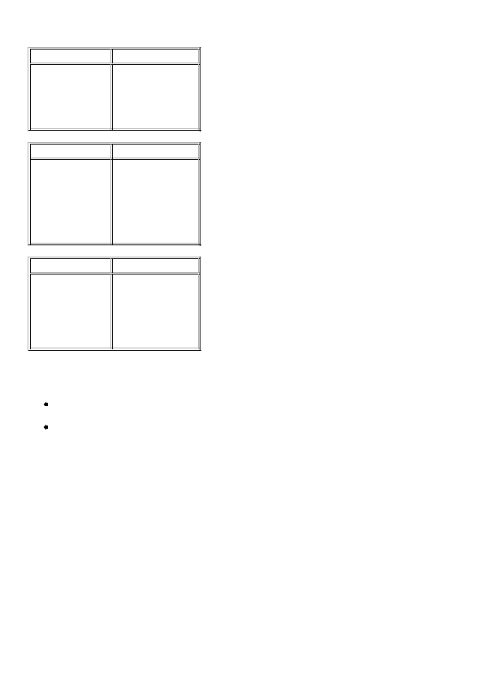

Esempi di input/output
File
File
File
File
File
File
Note
Un programma che restituisce sempre lo stesso valore, indipendentemente dai dati in
, non
totalizza alcun punteggio rilevante.
Attenzione se usate la piattaforma di sviluppo software basata sul compilatore Turbo Pascal e sul
sistema operativo Windows: visto che i vostri programmi potrebbero essere valutati in una piattaforma
diversa dalla vostra, avete garanzia di uniformità di comportamenti soltanto se utilizzate sempre il tipo
al posto del tipo
(quest'ultimo permette di rappresentare gli interi nell'intervallo
[-32768...32767] mentre
ne permette la rappresentazione in [-2147483648...2147483647]).